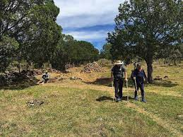
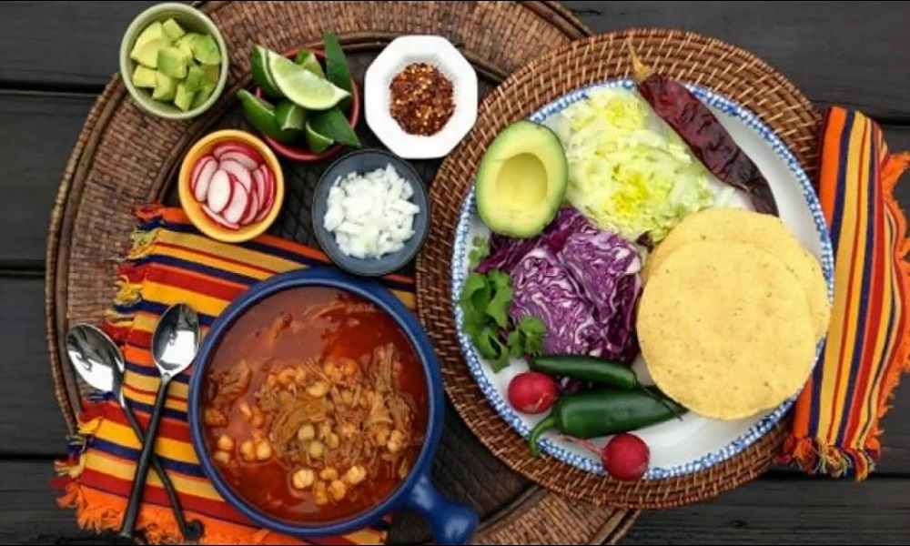

MUNICIPIO DE TALA, JALISCO
Nuestra tradicción:
- Gastronomia en fiestas tapatías
- Peregrinación a Talpa cuando termina la zafra
- Peregrinación a la Virgen de San Juan
- Fiestas de San Francisco de Asis
- Fistas de la feria de la caña
- Peregrinacion al Divino preso de Tala
- fiestas de la Capilla de San Juan de Tala
- Fiestas de Cristo Rey
Peregrinos a
Talpa de Allende

Platillo común en fiestas tapatías

ES SITIO WEB SE ELABORO CON FINES EDUCATIVOS, COMO PARTE DE LA ACTIVIDAD DE LA MATERIA DE CONSTRUYE PAGINAS WEB
Profesor: Juan Carlos Mariscal Chavarin
Estudio en: CETIs No. 161
Nombre: Jocelyn Lizeth Cruz Hernandez.
Correo: joce09475@gmail.com